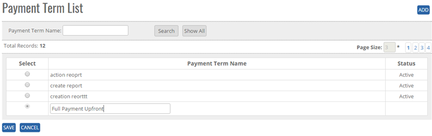


	<section>
		<article>
			<h2>Payment Terms<span></span></h2>
			<div>
				<p></p>
				

				<p>Payment Terms comes under master module. It can be accessed by user who has rights for this module.</p>

				<p>Go To >> Master >> Payment Terms >><b>ADD</b></p>

				<p>Click on Add button at top right corner of the page and the following page will open.</p>

				<div class="triangle-border top">
					
				</div>

				<p>Click on <b>ADD Button</b>, Enter a payment Term Details. </p>

				<p>Click on <b>Save Button</b>, user will get alert message "Record Saved Successfully".</p>

				<p>Click on <b>Cancel Button</b> the add operations and previous window will appear and data should not be saved.</p>


				<p><b>Modifying the existing Payment Terms</b></p>

				<p>The user who has a right to edit can edit the existing "Payment Terms List" in the system. All the fields can be edited by user, which impacts all its references in the system. </p>

				<p>Click <b>Edit</b>, Edit Payment Terms Column will be shown Payment Name as per added previously.</p>

				<p>Go To >> Master>>Material>>Material Medium>Click Radio Button (Material Medium Name) >> <b>EDIT</b></p>

				<p>System will allow editing all the Payment Term details. </p>

				<p>Click <b>Update</b> to save the currently added operations, user will get alert message <b>"Payment terms Record Updated Successfully"</b>. Click Cancel to cancel the add operations and previous window will appears and data should not save.</p>


				<p><b>DeActivate/activating existing Payment Terms</b></p>

				<p><b>DeActive</b> - Click on Deactivate Button, once the button is clicked it will ask confirmation message "Are you sure you want to Deactivate this record" with "OK and cancel" button.</p>

				<p>If user clicks on OK Button, record will get deactivated and if clicked on Cancel, record will not get deactivated.</p>

				<p><b>Active</b> - Same way once a record is deactivated, system will show Active button. If user clicks on Active button, record will get activated.</p>


				<p><b>Search /Show All Criteria</b></p>

				<p>- User can search the Payment Terms Name and then click on <b>Search</b>, it will show the result as per the search criteria. User can search name by single alphabet.</p>

				<p>- If user want to check all Payment Terms Name then click on <b>Show All</b> Button. It will show the list </p>

				<p>- Click on page no, System will navigate the desired page, per page 10 records will be displayed. </p>
			</div>
		</article>
	</section>